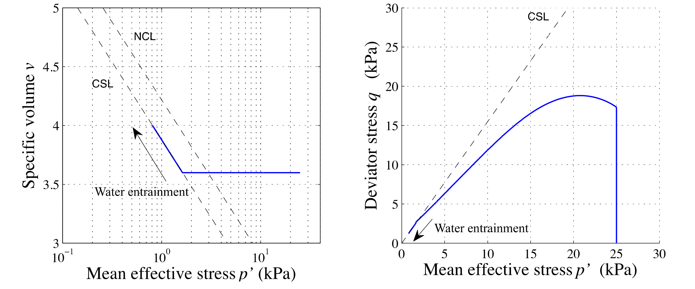

Multiscale modeling of natural hazards
MPM, LBM-DEM and ML
Krishna Kumar, krishnak@utexas.edu
Rei Hosseini, Qiuyu (Amber) Wang, Joseph Vantassel, Chihun Sung and Thiago Araujo
University of Texas at Austin

Prof. Boominathan's Felicitation
IITM, 25th June 2021
Thank you Sir! You are the best!!!
Geoelements Extremescale Computational Geomechanics
- Material Point Method
- Lattice-Boltzmann + Discrete Element Method
- Finite Element Method - Thermo-Hydro Mechanical Coupling
- Lattice Element Method
- Machine Learning

Oso landslide (2014)
Oso landslide (2014)
Oso landslide (2014)

Oso landslide: Historic landslide
Oso landslide: Geology
Courtesy of Dr Gunnar Schlieder
Mesh-based vs Mesh-free techniques

Material Point Method


Exascale simulations

MPM model setup
MPM simulation of Oso landslide
Oso landslide simulation
What is Ray Tracing?

What is Ray Tracing?

Two-phase MPM rendering
MPM Oso landslide rendering

Submarine run-out
Credit: Amanda Murphy (2016)
Mechanism of submarine runout
Lattice Boltzmann - MRT


\[f_{i}(x + dx, t +\Delta t) - f_{i}(x, t) = -S_{\alpha i}(
f_{i}(x, t) - f_{i} ^ {eq}(x, t))\]
- $S_{\alpha i}$ is the collisional matrix.
- Probability density of finding a particle : $f(x,\varepsilon, t) $, where, x is position, $\varepsilon$ is velocity, and t is time.

LBM - DEM a = 0.8 & 10,000 particles
- LBM Nodes = 50 Million : DEM grains = 10000 discs
- Run-time = 4 hours
- Speedup = 125x on a Pascal P100
Collapse on slopes: loose v dense

Loose v dense: Runout distance


Loose v dense: Initiation phase

Loose v dense: Initiation phase


Pore-pressure distribution along the failure plane during initiation.
Loose v dense: Runout phase

Loose v dense: Runout phase


Water entrainment front (~15d length) at a slope of 5*
Two-phase MPM Submarine landslide
Multiphase LBM
Multiphase LBM: Effect of varying the contact angle

(θ = 0°)

(θ = 180°)

(θ = 90°)
Multiphase LBM: Hysteresis in Hamburg sand

Multiphase LBM: Capillary structures

(θ = 90°)
Multiphase LBM: Hysteresis

Multiphase LBM: Origin of Hysteresis
Two-phase MPM Rainfall induced landslide
Multichannel Analysis of Surface Waves (MASW)

Machine Learning with Convolution Neural Network

Machine Learning with CNN

Machine Learning with Convolution Neural Network

CNN Full Waveform Inversion: Architecture

CNN Full Waveform Inversion: Training